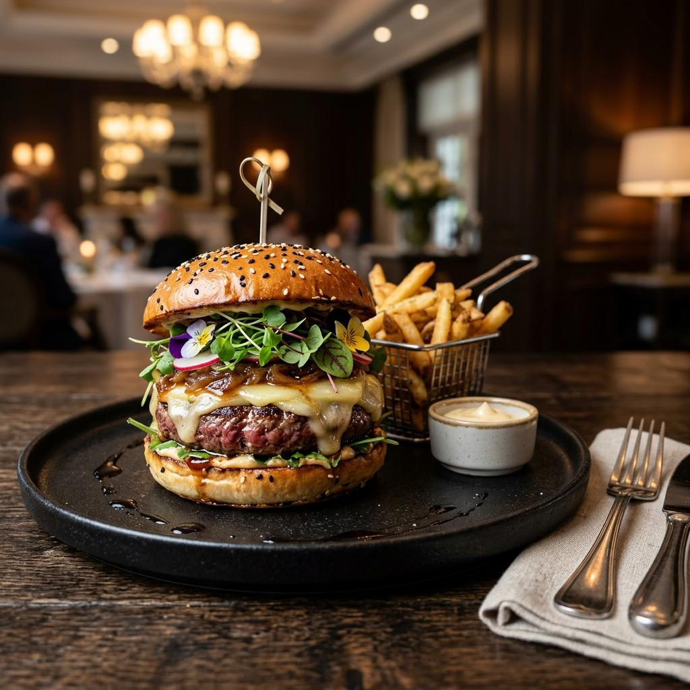
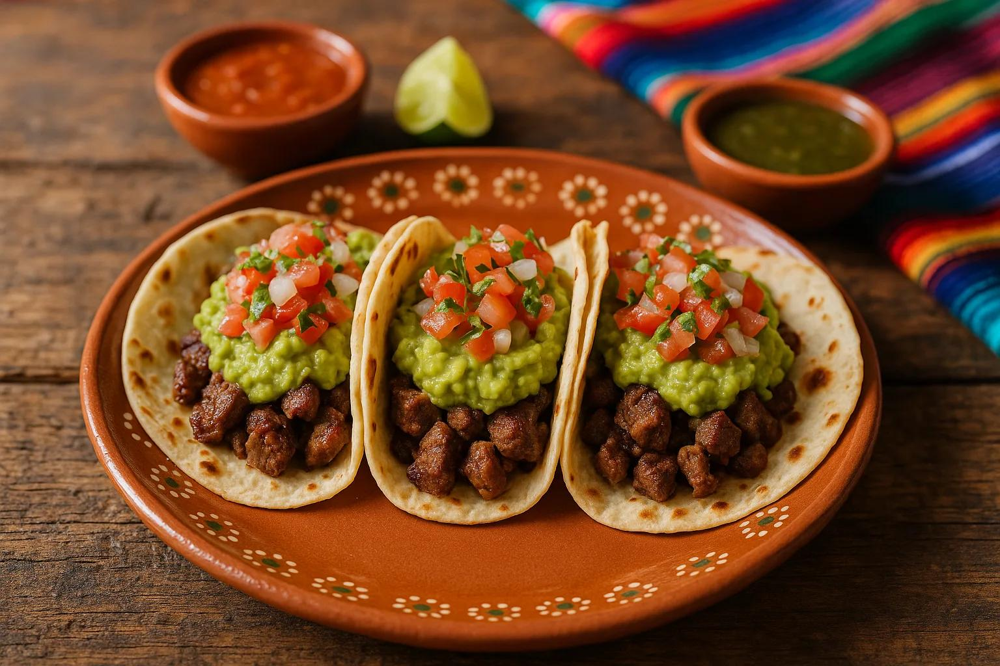
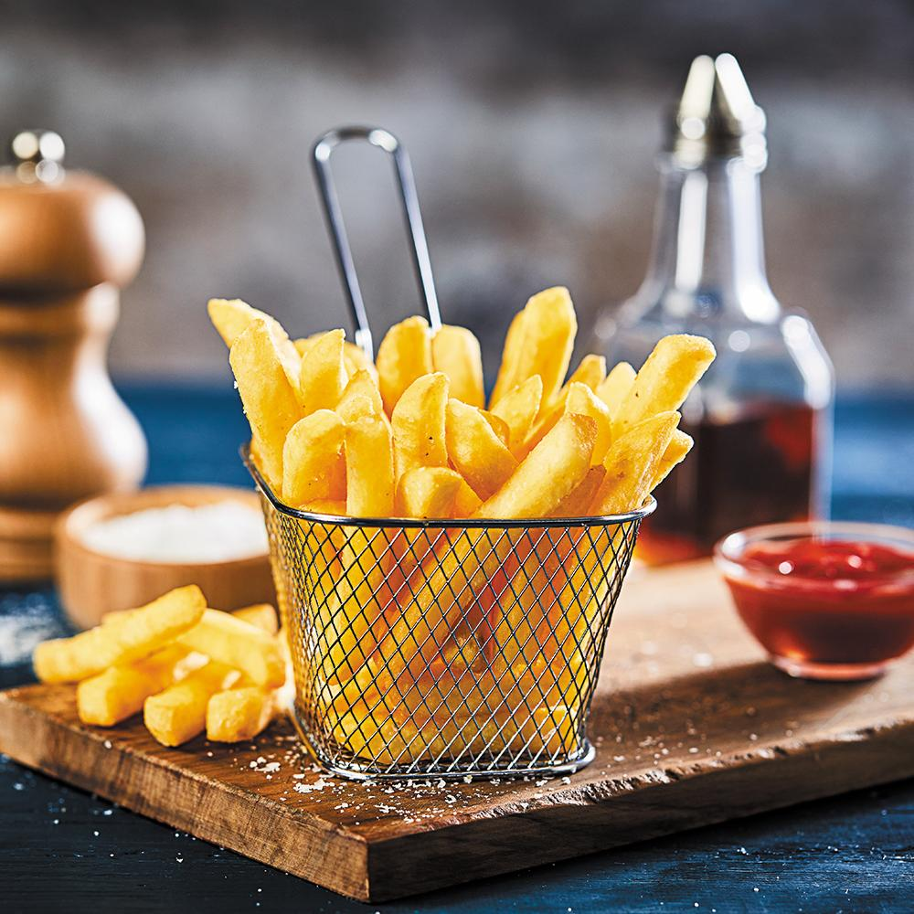

Hambúrguer
Pão brioche macio, blend bovino suculento de 160g, queijo cheddar derretido e maionese artesanal da casa. (Contém glúten e lactose).
R$ 23,90

Pão brioche macio, blend bovino suculento de 160g, queijo cheddar derretido e maionese artesanal da casa. (Contém glúten e lactose).
R$ 23,90

Tortilla crocante de milho recheada com carne moída bem temperada com cominho e páprica, alface fresca picada, cubos de tomate, queijo cheddar derretido e um toque de sour cream./p>
R$ 25,90

Batatas cortadas em formato palito, fritas até ficarem douradas, sequinhas e levemente salgadas. Acompanha maionese da casa. (Ideal para porções individuais ou para compartilhar).
R$ 15,90